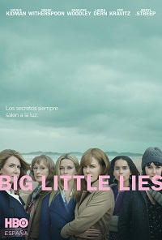

Series
-
Band of Brothers
Diez capítulos que muestra la trayectoria de los miembros del grupo élite de paracaidistas americanos en la Segunda Guerra Mundial.
-
Big Little Lies
Este aclamado drama, original de HBO, sigue a un grupo de madres de California cuyas vidas aparentemente perfectas dan un giro siniestro.
 -
Cruel Summer
Cruel Summer se ambienta a lo largo de tres veranos en la década de los 90, en el que una popular adolescente desaparece, haciendo que una chica sin aparente relación con ella, pase a ser la más popular de la ciudad.

-
For Life
For Life se inspira en la vida de Isaac Wright Jr. Éste es un prisionero que acaba por convertirse en abogado con el objetivo de revocar su cadena perpetua por un crimen que no cometió.
-
Game of Thrones
Quien se sienta en el Trono de Hierro, controla los Siete Reinos. Game of Thrones sigue la lucha de las casas nobles que codician tal poder.

-
Gangs of London
Tras el asesinato del capo de la organización, el repentino vacío de poder que crea su muerte rompe con la frágil paz que rige la complicada red de bandas que dominan las calles de Londres.
-
HomeComing
Homecoming es un drama que cuenta la historia de Heidi Bergman, una trabajadora de una agencia secreta gubernamental que ayuda a soldados a retomar su vida normal tras pasar varios años en la guerra.
-
House of Cards
House of Cards sigue al político del partido demócrata, Francis Underwood, en sus intentos por alcanzar un alto puesto en la esfera política de Washington.
-
Killing Eve
Killing Eve sigue la historia de dos increíbles mujeres con una inteligencia prodigiosa. Por un lado está Villanelle, una asesina psicópata sumida en el lujo de su profesión y por otro lado, Eve, una agente de seguridad.

-
La casa de papel
Ocho ladrones toman rehenes y se resguardan en la Fábrica Nacional de Moneda de España, mientras el líder de la banda manipula a la policía para cumplir con su plan.

-
Mandalorian
La serie sigue los pasos de Mando, un cazarrecompensas perteneciente a la legendaria tribu de los mandalorianos, un pistolero solitario que trabaja en los confines de la galaxia, donde no alcanza la autoridad de la Nueva República.
-
Mare of Easttown
Kate Winslet interpreta a la detective de un pequeño pueblo de Pensilvania que investiga un asesinato local mientras su vida se desmorona.
-
MotherFatherSon
Max posee uno de los imperios mediáticos más influyentes del mundo. Su negocio es la información: conoce los secretos más oscuros y usa su poder sin piedad, incluso contra su propia familia.
-
Ozark
Un asesor financiero arrastra a su familia desde Chicago hasta los lagos de Ozark para lavar 500 millones de dólares en cinco años y tranquilizar a un jefe narco.
-
Solos
Solos cuenta siete historias totalmente independientes que invitan a reflexionar al explorar el significado más profundo de la conexión humana a través de la visión única e individual de sus protagonistas.
-
Strange Angel
Ambientado en Los Ángeles en los años 30, este drama sigue la vida de Jack Parsons, un obrero brillante y que siempre ha aspirado a ser más que un conserje en una fábrica de productos químicos, tal y como fueron sus inicios.

-
Stranger Things
La historia arranca durante la década de los 80, en el pueblo ficticio de Hawkins, Indiana, cuando un niño llamado Will Byers desaparece misteriosamente.

-
Succession
Un mordaz y divertido drama de HBO que explora la política, el dinero y el poder a través de los ojos de una familia bastante disfuncional.
-
The Crown
Drama sobre las rivalidades políticas y los romances acaecidos durante el reinado de Isabel II, así como de los eventos que moldearían la segunda mitad del siglo XX.

-
The L Word
The L Word retrata la vida, las aventuras y desventuras de un grupo de mujeres lesbianas, sus amigas, familias y amantes, en Los Ángeles - Ciudad de West Hollywood, California.
-
The Stand
The Stand es la visión de Stephen King de un mundo diezmado por una plaga y embarcado en una lucha elemental entre el bien y el mal. El destino de la humanidad está en las frágiles manos de la madre Abagail, de 108 años, y de un puñado de supervivientes.
-
The Wilds
Un grupo de adolescentes de diferentes orígenes debe luchar por la supervivencia después que un accidente de avión las dejó varadas en una isla desierta.

-
WandaVision
Wanda Maximoff y Vision llegan a vivir al pueblo de Westview, donde tendrán que esconder sus súperpoderes para acoplarse a la vida mundana de los suburbios. Sin embargo nada es lo que parece y poco a poco la realidad comenzará a desvanecerse.
-
Yor Honor
El hijo de un juez muy respetado se ve inmerso en una persecución que lleva a importantes mentiras, engaños y decisiones imposibles.